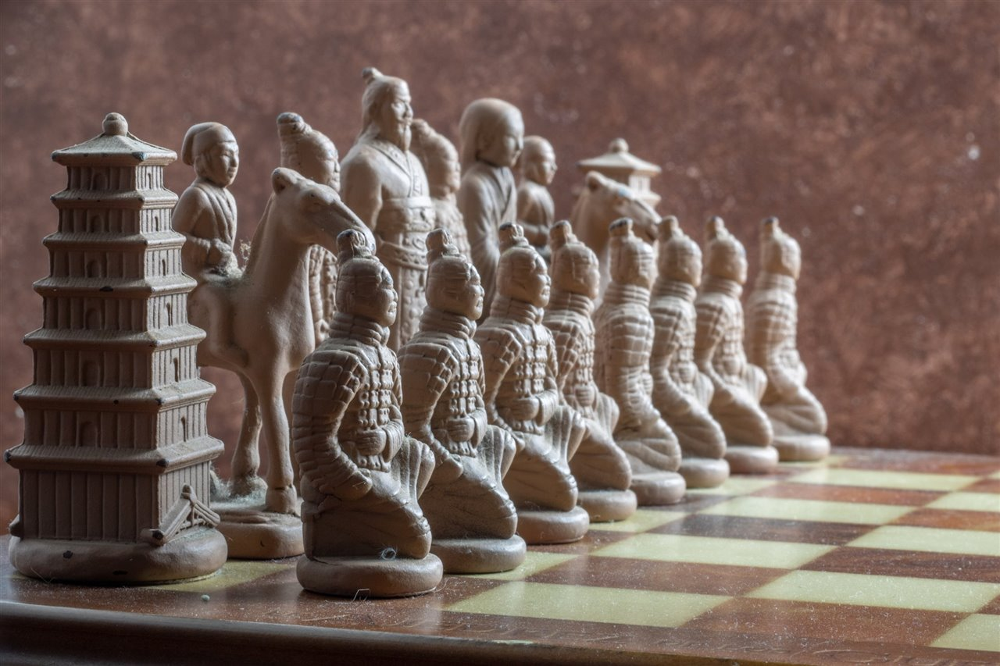
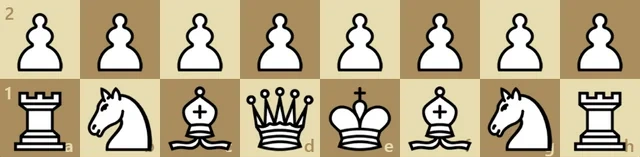
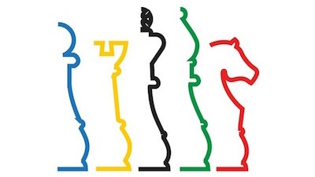
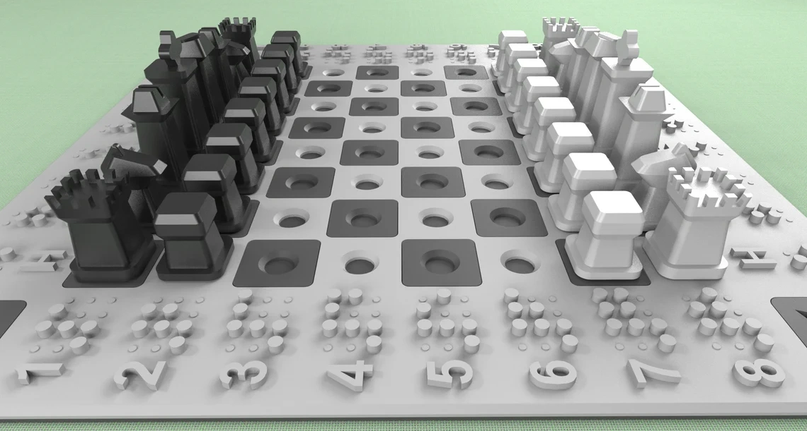

Curiosidad 1
Orígenes del Ajedrez
El ajedrez se originó en India hace más de 1.500 años.

Curiosidad 2
Jaque Mate
El término 'jaque mate' proviene del persa 'shāh māt', que significa 'el rey está perdido'.
Curiosidad 3
Prohibido en China
El ajedrez fue prohibido en la antigua China por un emperador que lo consideraba peligroso.
Curiosidad 4
Partida Larga
La partida de ajedrez más larga registrada duró 269 movimientos.
Curiosidad 9
Juego Complejo
El ajedrez es considerado uno de los juegos más complejos del mundo.
Curiosidad 10
Piezas Iniciales
Cada jugador comienza con 16 piezas en el ajedrez.

Curiosidad 11
Primer Movimiento
En ajedrez, hay 400 posibilidades diferentes de mover las piezas en el primer turno.
Curiosidad 12
Tablero de Ajedrez
El tablero de ajedrez tiene 64 casillas.
Curiosidad 13
Herramienta Educativa
El ajedrez fue usado como una herramienta educativa por Napoleón Bonaparte.
Curiosidad 5
Primer Torneo
En 1851, se celebró el primer torneo internacional de ajedrez en Londres.
Curiosidad 6
Jaque Mate Rápido
El jaque mate más rápido en ajedrez fue en 2 movimientos.
Curiosidad 7
Joven Campeón
El campeón mundial de ajedrez más joven fue Bobby Fischer, quien ganó a los 14 años.
Curiosidad 8
Ajedrez Olímpico
El ajedrez fue incluido como deporte olímpico en 1999.

Curiosidad 14
Peones Estratégicos
En ajedrez, los peones son las piezas más humildes pero también las más estratégicas.
Curiosidad 15
Victoria con Peón
Un jugador puede ganar una partida con solo su reina y peón.
Curiosidad 16
Entrenamiento Visual
Los jugadores de ajedrez entrenan su memoria visual para recordar posiciones de piezas.
Curiosidad 17
Ajedrez para Ciegos
El ajedrez tiene una versión para personas con discapacidades visuales llamada ajedrez braille.
